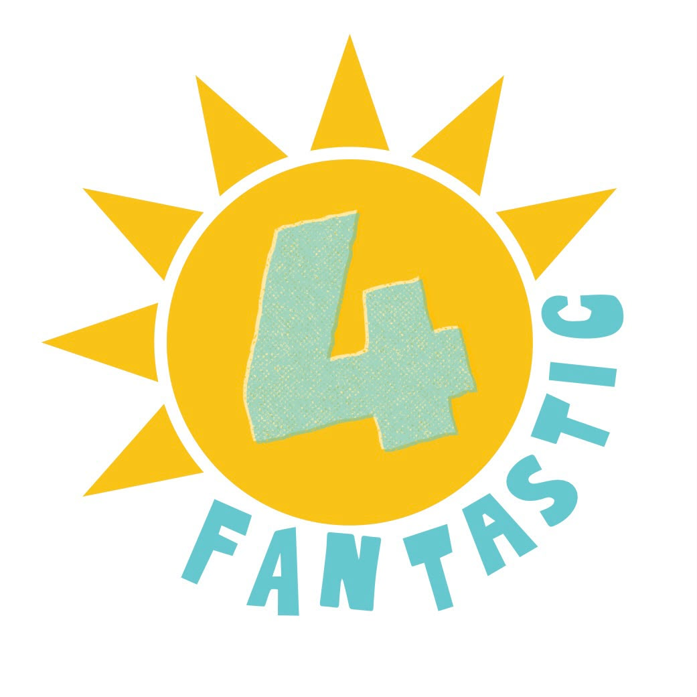

This is Fantastic Four

• Matahari (Kuning): Melambangkan pusat energi, optimisme, dan keceriaan yang memberikan dampak positif ke sekitarnya. • Sinar Segitiga: Mencerminkan fokus, ketajaman visi, dan pertumbuhan yang dinamis ke segala arah. • Angka "4" Bertekstur: Simbol pondasi kelompok yang kuat, unik, kreatif, dan memiliki karakter yang khas. • Tulisan Melengkung: Menunjukkan sifat yang adaptif, ramah, dan fleksibel dalam bekerja sama. • Warna Kuning & Biru Muda: Perpaduan harmoni antara semangat tinggi (kuning) dan pemikiran yang tenang serta ide segar (biru). Inti Kesimpulan: Logo ini melambangkan sebuah tim (angka 4) yang solid, penuh energi kreatif, dan siap menciptakan hasil yang luar biasa (fantastic) dengan cara yang menyenangkan.